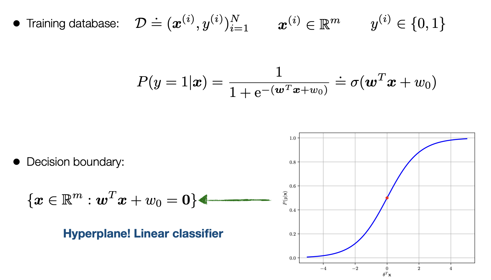
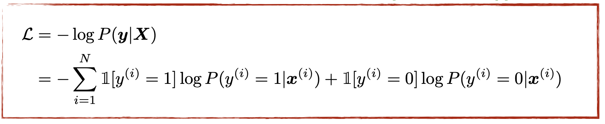
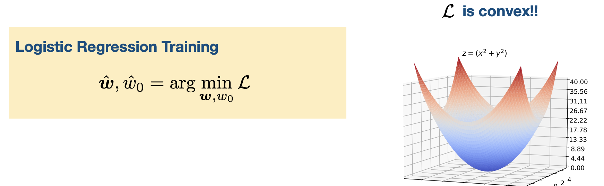
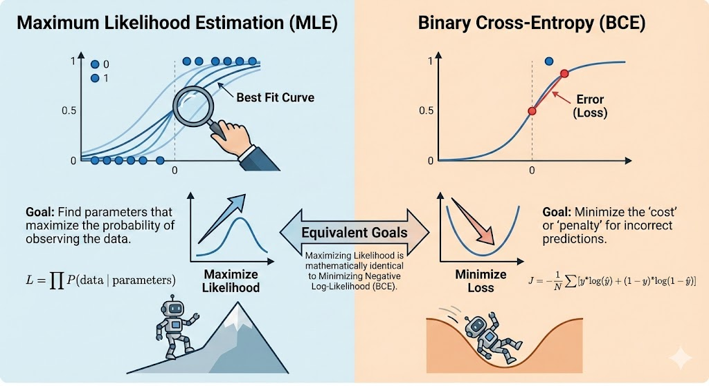
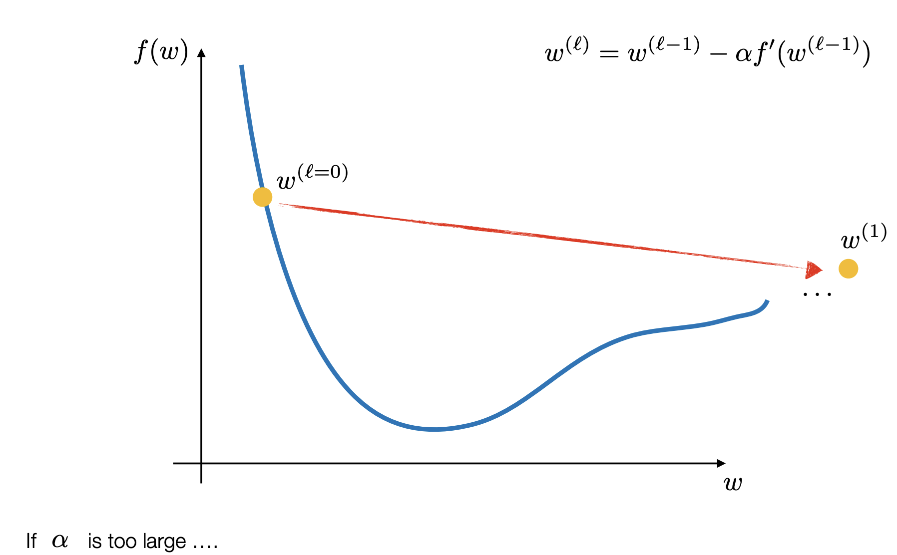
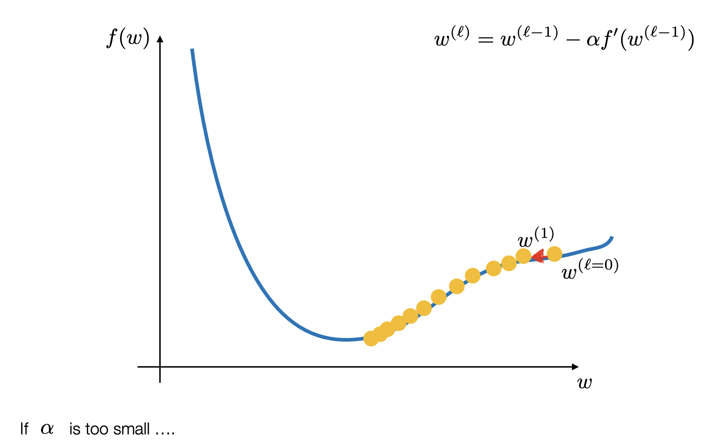

In the sense of Binary Logistic Regression we have essentially the following:

This denotes teh training grounds with w being the weights/parameters that we are trying to optimize for: denoted below is all the terms
- w: The weights or parameters that will give us the best fit line to seperate our data
- omega: is the sigmoid function also the 1/exponential which is the deciding factor if it is 1 or 0
We find the best w for the omega function by finding the argmax of the log likelihood function:

in this case we are actually minimizing because it is easier to minimize a function due to calculus reasons. Some times we get the function to be convex and more often than not in deep learning thsi is not the case
Binary Cross Entropy:
The primary use of BCE is as a Loss Function during the training phase of a model (like Logistic Regression or a Neural Network).
-
Measuring Error: It provides a single number that represents how “wrong” the model is across the entire dataset.
-
Guiding Gradient Descent: Because the BCE function is convex (bowl-shaped), it has a clear bottom point. Optimization algorithms take the derivative (gradient) of this function to figure out exactly how to nudge the weights () to make the loss smaller in the next iteration.
-
Probability Calibration: Unlike simple accuracy (which just counts right/wrong), BCE cares about confidence. It forces the model to not just be “right,” but to be “right with high confidence.”

Gradient Descent
In some types of math (like Linear Regression), you can use a single formula to jump straight to the answer. This is called a “closed-form solution.”
However, for Logistic Regression, the equation used to find the best parameters—where the gradient of the loss equals zero ()—has no closed-form solution. This means we cannot simply rearrange the equation to find the weights; we have to “search” for them.
Iterative Search for the Minimum Since we can’t jump to the answer, we use Gradient Descent to find it one small step at a time.
-
The Starting Point: The model begins with random weights ().
-
The Direction: It calculates the slope (gradient) of the Binary Cross Entropy function.
-
The Step: It moves “downhill” in the opposite direction of the slope to reduce the error.
The update rule looks like this:
(Where is the “step size” or learning rate).
Exploiting Convexity We use Gradient Descent because the Binary Cross-Entropy loss function is convex. Imagine a perfectly smooth bowl. Because it is convex, Gradient Descent is guaranteed to eventually find the absolute bottom (the global minimum) as long as the step size is chosen correctly.
Handling Large Data (Stochastic Gradient Descent) Calculating the “perfect” direction using every single piece of data in a massive database is expensive and slow. To solve this, we often use Stochastic Gradient Descent (SGD) or Mini-batch Optimization.
-
Instead of looking at the whole mountain, the model picks a random “mini-batch” of data to decide which way to step.
-
This allows the model to update its weights much faster and handle “very large databases”.


Here you can see the different algorithms taht are used in gradient descent calculation: Link
- Difference between Sigmoid and soft-max.
- in multiple Classes and why they sum up to one and what sums up to one
- Calculate & Minimize Loss function
- Why not call the BCE the negative log likelihood #publish ml data-science gradient-descent logistic-regression